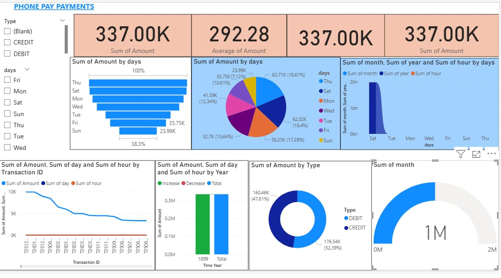
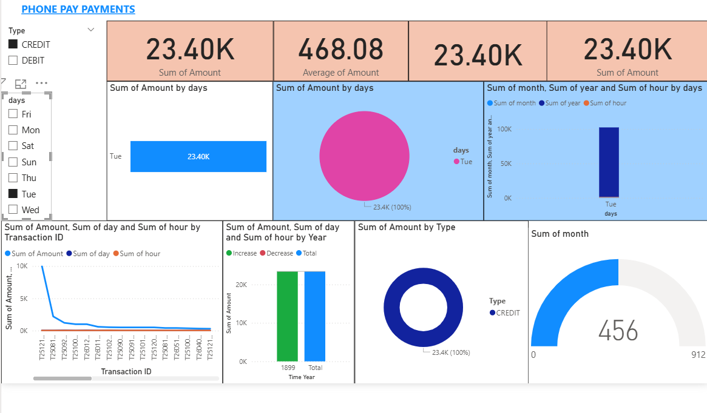

Programming
Python · SQL · C
Hello, I'm
I turn raw data into clear insights and useful stories. I enjoy exploring datasets, building interactive dashboards, and solving practical problems with analytics.
01 / ABOUT ME
I am a B.Tech graduate in Artificial Intelligence and Machine Learning from Eswar College of Engineering, with a strong interest in data analytics.
My experience includes data cleaning, exploratory data analysis, statistical analysis, and dashboard development. Through training internships and academic projects, I have worked with Python, SQL, Power BI, Excel, and data analysis libraries.
02 / TOOLKIT
A practical toolkit for exploring data, finding patterns, and communicating insights.
Python · SQL · C
Power BI · Excel · Tableau
Pandas · NumPy · Matplotlib · Seaborn
Data cleaning · EDA · Statistical analysis · Problem solving
Web3.py · Ganache · Smart contracts
Machine learning · Data visualization
03 / SELECTED WORK
A selection of academic and analytics work. Project details are based on my resume and current dashboard preview.
Explored payment transaction patterns and built an interactive Power BI dashboard to compare transaction types and understand day-wise trends.

Worked on a blockchain-based access-control approach for securing Mobile Crowd Sensing data used in areas such as traffic, pollution, and disaster management. The project explored privacy and data-access risks in centralized systems.
DASHBOARD SNAPSHOTS
01 / Overall dashboard view
Overall dashboard view with transaction KPIs, day-wise charts and credit/debit analysis.
02 / Filtered dashboard view

Filtered view showing CREDIT transactions for Tuesday. The displayed total is 23.40K and the displayed average is 468.08.
04 / EXPERIENCE & EDUCATION
Practised data cleaning and exploratory data analysis on datasets, identified trends, and focused on data accuracy and quality.
Developed Python-based coding solutions and applied Python to data handling and automation exercises.
CGPA: 8.94 / 10
Percentage: 71%
05 / BEYOND THE CLASSROOM
May 2025 – June 2025
September 2025
Led a 5-member team for a humanoid robot prototype presentation.
Exploring open datasets and data challenges.
06 / GET IN TOUCH
I'm interested in entry-level opportunities where I can learn, contribute, and grow as a data analyst.
Email me ↗